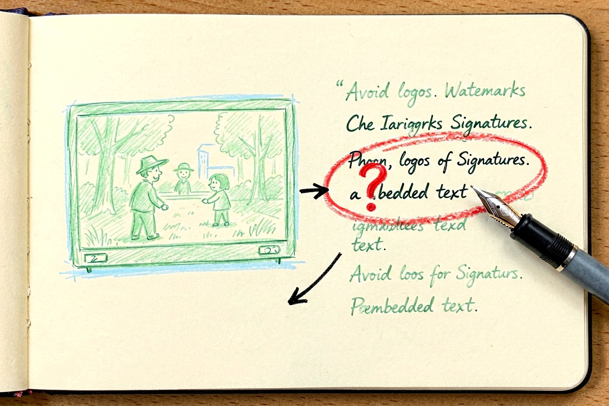
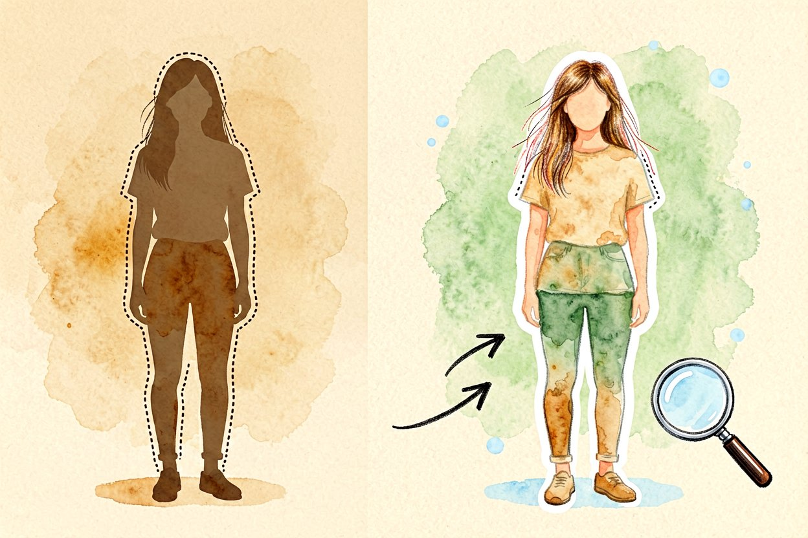
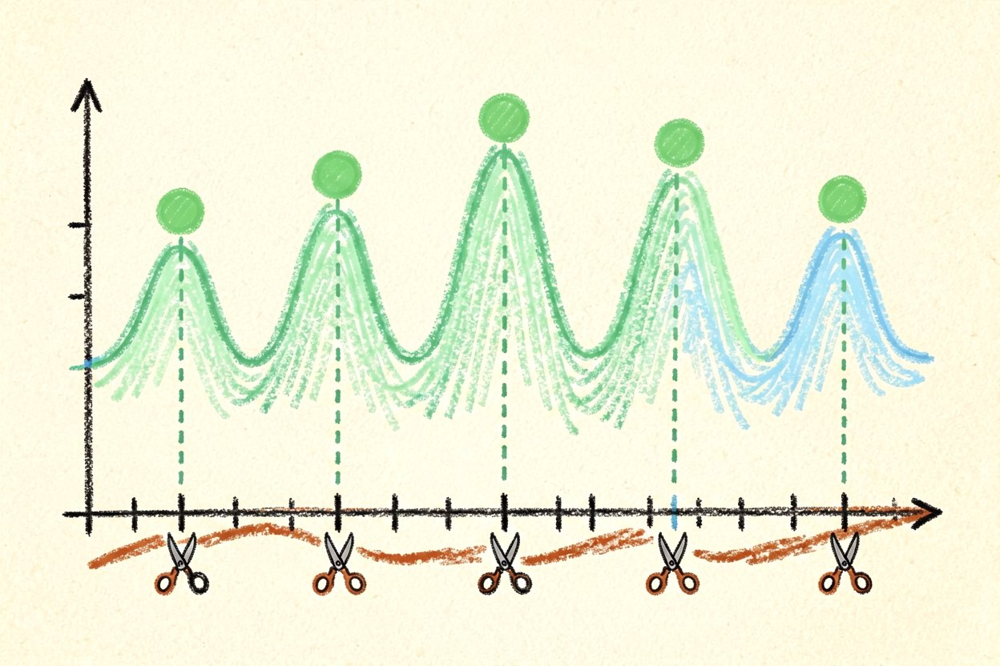
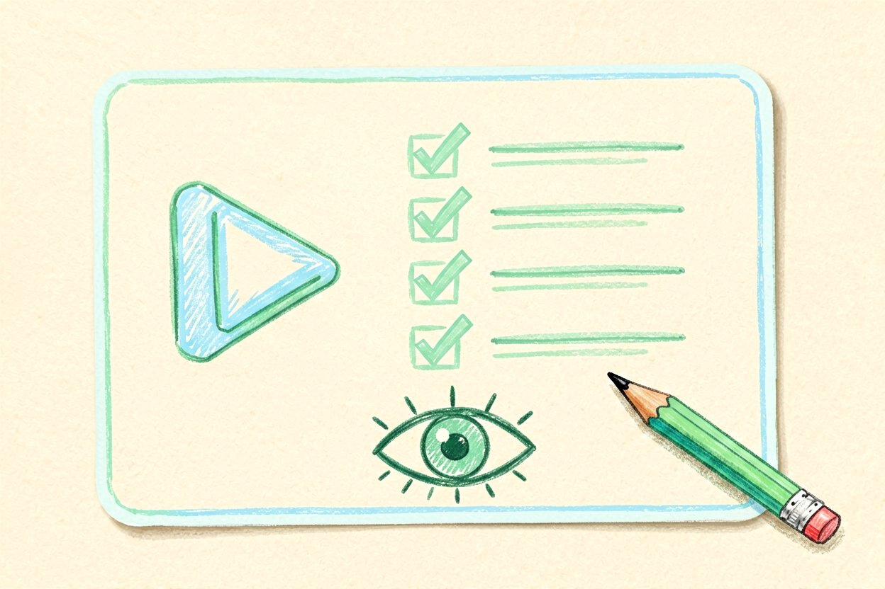
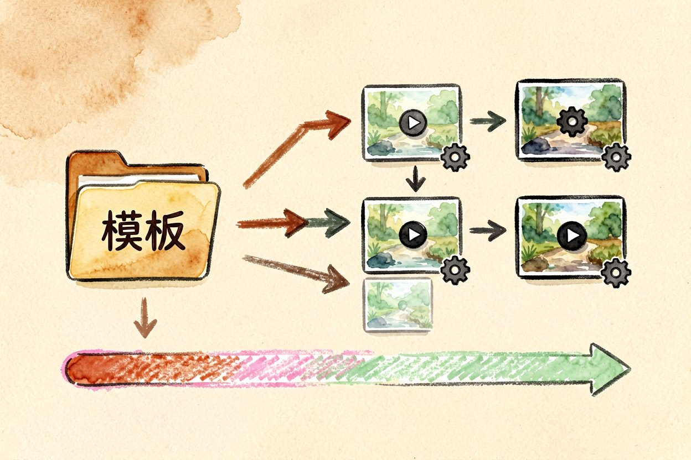
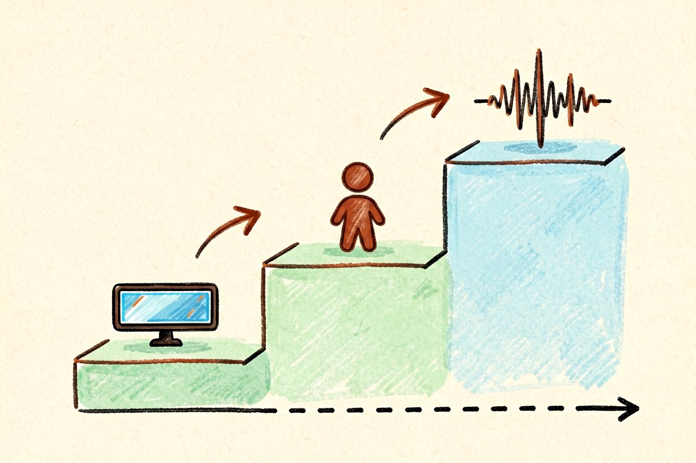
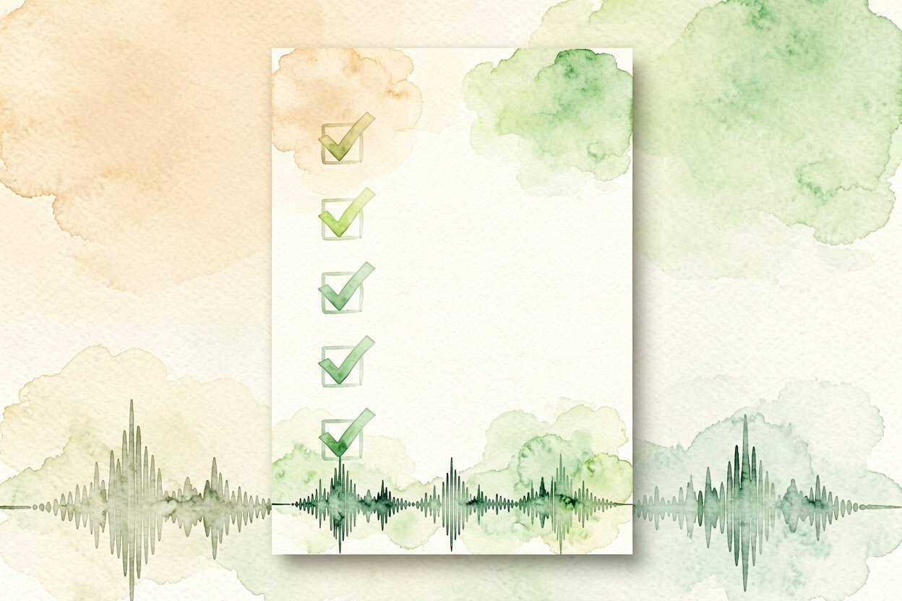

AI 视频剪辑进阶：字幕抠像和卡点一起搞定
剪映里还在卡基础操作？进阶玩法是用 AI 做自动字幕、智能抠像和节奏卡点。
AI视频剪辑真正省时间的，是字幕、抠像、卡点这三件最磨人的活儿。基础操作熟了，就该让模型接手它们。下面说怎么落地，也提醒自动结果哪里不能全信，免得成片出来才返工，那最磨人。进阶不是堆功能，是把这三件做稳。
AI视频剪辑先做自动字幕

语音转写现在很准，但人名、术语仍会错。让模型出稿后，一定自己过一遍再烧进视频。下面是核心一步，字幕错一个专有名词观感就掉档：
subs = model.transcribe("clip.mp4")
video = add_caption(video, subs)字幕是观众最先注意的细节，错字比没字幕还显业余，这遍校对不能省。双语字幕更要核，机器翻译常把术语译得不知所云，宁可少一行也别错一行。字幕位置也别挡脸，AI 默认常放正中，手动挪到下方安全区，观感立刻专业。
智能抠像：换背景别贪复杂

绿幕最稳，纯 AI 抠发丝在乱背景里会闪边。需要干净合成，补一层实拍底，比全靠模型更可信。AI视频剪辑做氛围够用，做精修还得人手。抠像边缘糊一点，观众立刻出戏，实拍兜底最稳。人物和背景光不一致时，先调色再抠，比抠完救边省力。抠完别急着导出，放大看发丝边缘有没有白边，有就补一层实拍。
节奏卡点：让模型找鼓点

把音乐给模型，让它标出鼓点位置，再对着剪。比手动对齐快几倍。但卡点太密会累，留呼吸感更舒服。卡点是服务内容的，不是炫技，密到眼花反而伤观感。高潮段卡密、铺垫段卡疏，张弛才出来，别全程一个密度。卡点准了，视频的"爽感"一半来自这，别偷这步。
成片前的人工一眼

自动剪完，自己静音看一遍画面流不流畅，再开声核对字幕和口型。别把成片全信模型，AI视频剪辑是提速，质感最后靠你的眼睛。静音看能暴露节奏问题，开声看能暴露对口型，两遍都不能少。这遍过了，才敢导出，省得发完发现硬伤删重传。观众不原谅"差不多"，你也不能。
批量处理怎么提效

同类型视频一堆时，把字幕、调色、卡点做成模板，一批套用。AI视频剪辑的强项就是重复活儿标准化，别一条条手调。模板定一次，后面只换素材，效率差十倍。先打磨好一条标杆片，其余照着套，质量也稳。注意每条素材节奏不同，套完模板再微调卡点，别完全不动，否则看起来像流水线出品，没灵魂。批量前先给每条标好类型，分类套模板比混着套准，这步规划省下的后期远多于套模板省下的时间。
新手进阶顺序

先练字幕，再抠像，最后卡点。别一上来全自动化，AI视频剪辑是一步步长出来的，稳比炫重要。每步跑顺再加下一步，你才清楚问题出在哪。把每个 AI 功能当成单独练的招，合起来才是你的剪辑功力，别指望一个按钮出爆款。练熟这三招，你和普通剪辑的差距就在出品速度和稳定度上。

本文信息核对于 2026-08-31。AI 产品的价格、免费额度与功能变动频繁，实际以各工具官网当前说明为准。